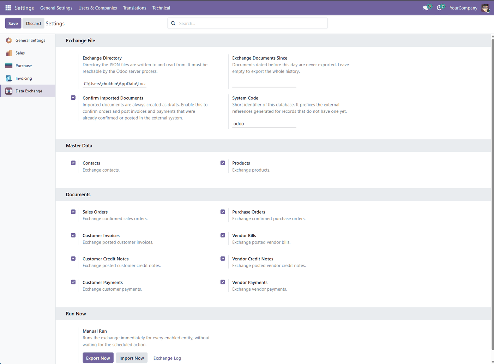
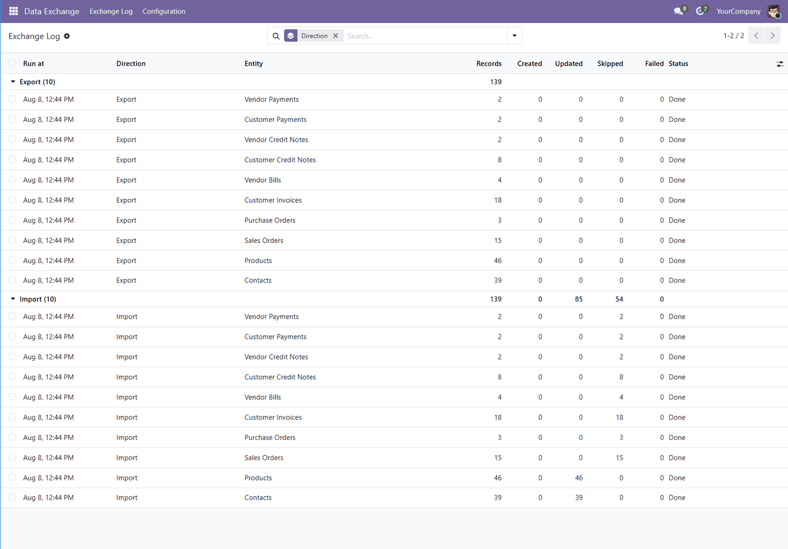
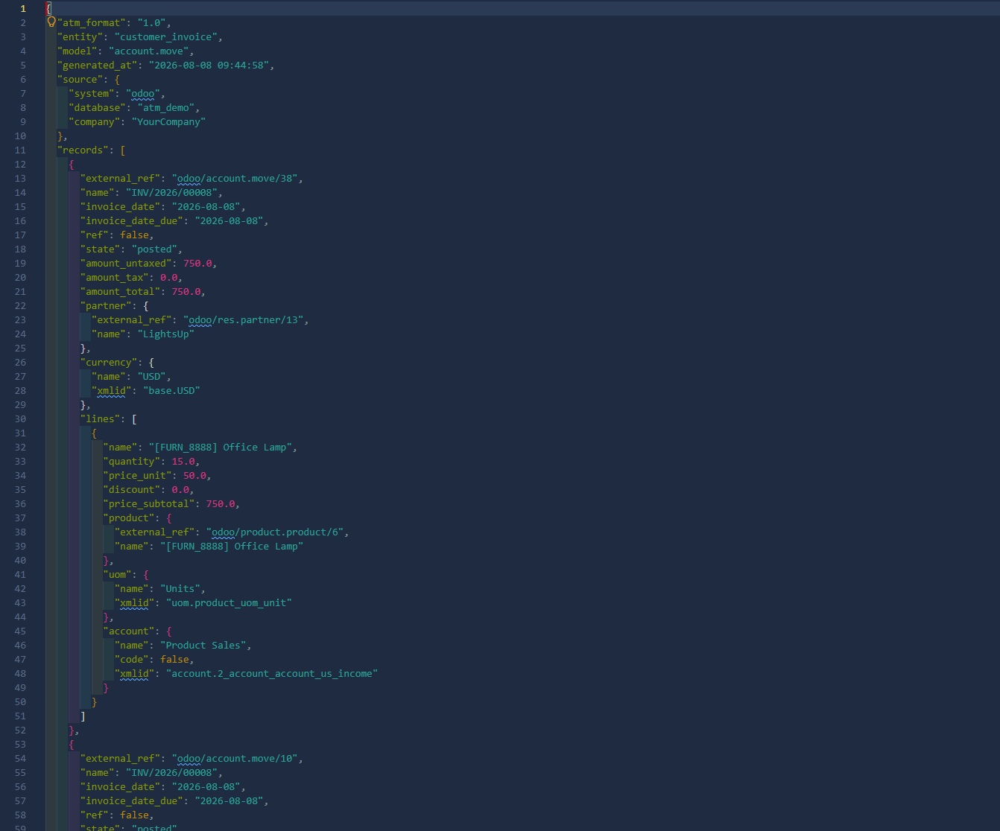

No open port. No middleware. No API keys. Odoo writes the documents into a shared directory and reads back whatever the other system puts there.
Built for keeping Odoo alongside another accounting system — including 1C and BAS, which exchange through files the same way.
Без відкритих портів, проміжних сервісів і ключів API. Odoo складає документи у спільну теку й читає звідти те, що поклала інша система. Так само, як обмінюються 1С і BAS, тому міст будується без переробки того боку.
Обмінюються десять сутностей: контрагенти, номенклатура, замовлення клієнтів і постачальникам, рахунки клієнтам і постачальників, повернення в обидва боки, оплати від клієнтів і постачальникам. Кожну можна увімкнути або вимкнути окремо.
Записи зіставляються за зовнішнім ідентифікатором, а не за номером у базі, тому повторне завантаження того самого файлу нічого не задвоює. Завантажені документи створюються чернетками; проведені документи ніколи не переписуються.
Інтерфейс і документація доступні українською.
| Entity | Odoo model | File |
|---|---|---|
| Contacts | res.partner | partners.json |
| Products | product.product | products.json |
| Sales Orders | sale.order | sale_orders.json |
| Purchase Orders | purchase.order | purchase_orders.json |
| Customer Invoices | account.move | customer_invoices.json |
| Vendor Bills | account.move | vendor_bills.json |
| Customer Credit Notes | account.move | customer_refunds.json |
| Vendor Credit Notes | account.move | vendor_refunds.json |
| Customer Payments | account.payment | customer_payments.json |
| Vendor Payments | account.payment | vendor_payments.json |
Every entity can be switched on or off separately, so the other side receives only what it actually consumes.

Records are matched by an external reference, never by database id. Importing the same file twice creates nothing the second time, and a file exported from one database loads correctly into another.
Imported documents are created as drafts. Confirming orders and posting invoices is an explicit setting, and it goes through Odoo's own business methods. A posted document is never rewritten by a later import.
Each record is imported inside its own savepoint. A document your database rejects is counted and reported; the rest of the file still goes through.
Every run is written to an exchange log with created, updated, skipped and failed counters, the file it touched, and the reason when something did not go through.
Orders, invoices, bills and credit notes carry the taxable base and the tax amount of every rate separately, not just one total, along with the taxes of each line. A total is enough to reconcile a document; a tax invoice needs the split.
The breakdown adds up the amounts Odoo already computed rather than recomputing them, so it stays in the document currency and matches the untaxed and tax totals to the cent.

Here the same database was imported back into itself: every document was read and then skipped, because posted documents are never rewritten. The counters account for all of it.

Reference data such as currencies, units of measure and accounts travels as a description — name, code and XML id — and is resolved against the target database. That is what lets the same file be read by a system that knows nothing about Odoo's ids.
2.1.0 — 2026-08-18
VAT is now exchanged rate by rate, not as a single figure. Every
order, invoice, bill and credit note carries the taxable base, the tax
amount and the rate for each of its rates, plus a group for the lines
that carry no tax. Document lines list their own taxes, and an incoming
line gets them applied back — matched by external id, by name, or
by the rate itself, so a tax renamed on the other side is still
recognised. A single total is enough to reconcile a document; a tax
invoice needs the split.
ПДВ тепер передається за ставками, а не однією сумою: для кожної ставки — база оподаткування, сума податку і сама ставка. Саме цього бракувало для податкової накладної.
2.0.1 — 2026-08-08
Ukrainian interface (uk.po), a Ukrainian section on this page, and a
new icon. The exchange log now counts every record the file held, and shows
the Skipped column, so a run that skipped everything no longer reads
as a run that did nothing.
Український інтерфейс, нова іконка, виправлені лічильники в журналі обміну.
2.0.0 — 2026-08-08
Rewritten from an exporter of sales orders into a general document exchange
engine: ten entities instead of one, matching by external reference so
repeated imports create nothing twice, an exchange log, per-entity switches,
and imported documents created as drafts. Available for Odoo 16.0 – 19.0.
Переписано з експортера замовлень на повноцінний обмін документами: десять сутностей замість однієї.
1.x — 2023–2024
Exported confirmed sales orders to a single order_list.json and read them back. Published for Odoo 14.0, 15.0 and 16.0 under the name «ATM».
Контрагенти з ЄДР — type an ЄДРПОУ code and the partner record fills itself: legal name, address, phone, e-mail, КВЕД. Handy right after an import from 1С/BAS, when the counterparties are in but empty — hundreds can be filled in one pass. Free.
Scheduled actions created by earlier versions keep working: the old model still answers and hands the work to the new engine. It only covers sales orders, so switch to the new scheduled actions to exchange everything else.